Sklearn : Apprentissage Non-Supervisé
Dans ce chapitre, nous explorerons les algorithmes d'apprentissage non-supervisé avec Scikit-learn. Vous apprendrez à segmenter des données à l'aide du clustering (K-Means), à détecter des anomalies avec l'Isolation Forest, et à réduire la dimensionnalité avec l'analyse en composantes principales (PCA).
Sommaire :
import numpy as np
import matplotlib.pyplot as plt
from sklearn.datasets import make_blobs
1. K-Means Clustering
from sklearn.cluster import KMeans
# Génération de données
X, y = make_blobs(n_samples=100, centers=3, cluster_std=0.4, random_state=0)
plt.scatter(X[:,0], X[:,1])
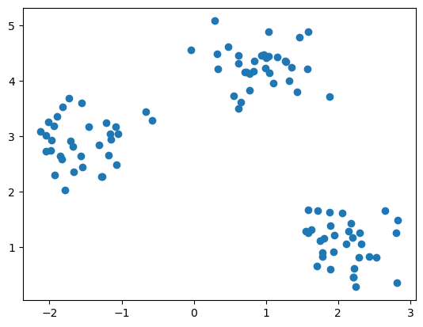
model = KMeans(n_clusters=3)
model.fit(X)
model.predict(X)
plt.scatter(X[:,0], X[:,1], c=model.predict(X))
plt.scatter(model.cluster_centers_[:,0], model.cluster_centers_[:,1], c='r')
model.score(X)
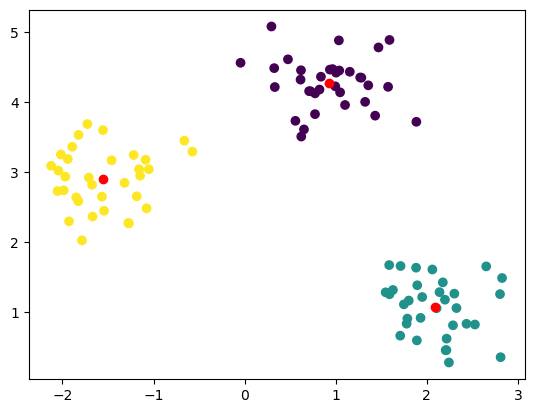
Elbow Method
inertia = []
K_range = range(1, 20)
for k in K_range:
model = KMeans(n_clusters=k).fit(X)
inertia.append(model.inertia_)
plt.plot(K_range, inertia)
plt.xlabel('nombre de clusters')
plt.ylabel('Cout du modele (Inertia)')
-
Text(0, 0.5, 'Cout du modele (Inertia)')
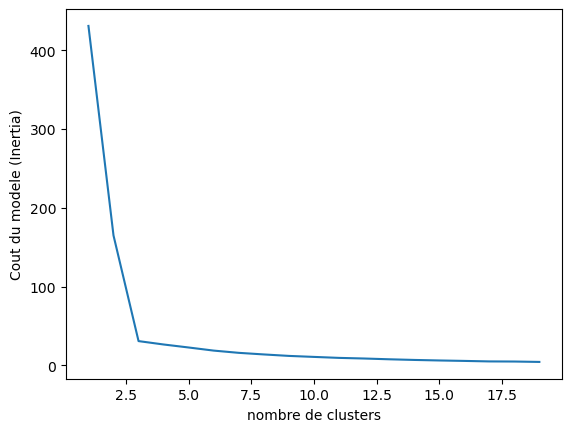
2. Detection d'anomalies avec Isolation Forest
from sklearn.ensemble import IsolationForest
X, y = make_blobs(n_samples=50, centers=1, cluster_std=0.1, random_state=0)
X[-1,:] = np.array([2.25, 5])
plt.scatter(X[:,0], X[:, 1])
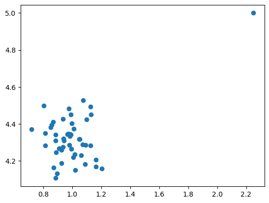
model = IsolationForest(contamination=0.01)
model.fit(X)
plt.scatter(X[:,0], X[:, 1], c=model.predict(X))
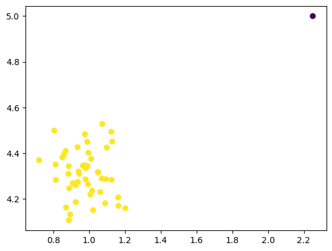
Application : Digits Outliers
from sklearn.datasets import load_digits
digits = load_digits()
images = digits.images
X = digits.data
y = digits.target
plt.imshow(images[0])
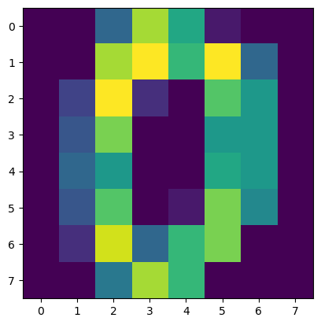
model = IsolationForest(random_state=0, contamination=0.02)
model.fit(X)
outliers = model.predict(X) == -1
plt.figure(figsize=(12, 3))
for i in range(10):
plt.subplot(1, 10, i+1)
plt.imshow(images[outliers][i])
plt.title(y[outliers][i])
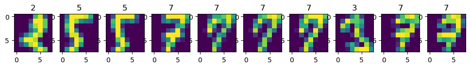
2. PCA : Reduction de dimension
Visualisation 2D
from sklearn.decomposition import PCA
model = PCA(n_components=2)
model.fit(X)
-
PCA
PCA(n_components=2)
x_pca = model.transform(X)
plt.scatter(x_pca[:,0], x_pca[:,1], c=y)
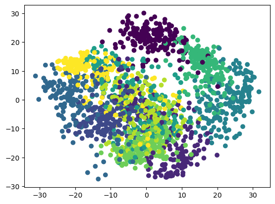
plt.figure()
plt.xlim(-30, 30)
plt.ylim(-30, 30)
for i in range(100):
plt.text(x_pca[i,0], x_pca[i,1], str(y[i]))
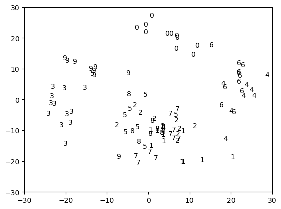
Compression de données
n_dims = X.shape[1]
model = PCA(n_components=n_dims)
model.fit(X)
variances = model.explained_variance_ratio_
meilleur_dims = np.argmax(np.cumsum(variances) > 0.90)
plt.bar(range(n_dims), np.cumsum(variances))
plt.hlines(0.90, 0, meilleur_dims, colors='r')
plt.vlines(meilleur_dims, 0, 0.90, colors='r')
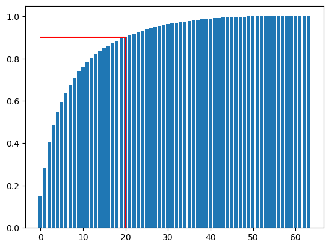
model = PCA(n_components=0.99)
model.fit(X)
-
PCA
PCA(n_components=0.99)
X_compress = model.fit_transform(X)
X_decompress = model.inverse_transform(X_compress)
plt.subplot(1, 2, 1)
plt.imshow(X[0,:].reshape((8,8)), cmap='gray')
plt.title('originel')
plt.subplot(1, 2, 2)
plt.imshow(X_decompress[0,:].reshape((8,8)), cmap='gray')
plt.title('Compressé')
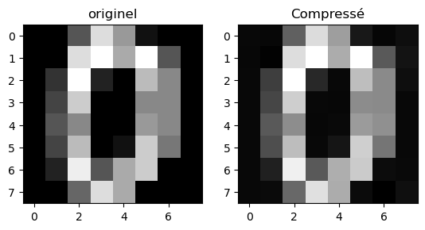